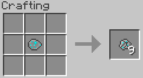
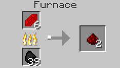
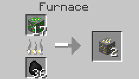

Table of content
Basics
Items
Blocks
Plant Types
Other Plants
↑
Basics
Home
Getting Started
Concepts
Getting Seeds and Resources
Crafting Recipes
Configuring the Mod
Integration with Other Mods
Items
Mineral Rock
Dense Mineral Rock
Mineral Crystal
Mineral Hoe
Seeds
Shards
Bulbs
Blocks
Mineral Soil
Mineral Stone
Organic Ore
Plant Types
Crystalline Plants
Metallic Plants
Biochemical Plants
Other Plants
Mystical Seed Pod
↑
Crafting Recipes
This page contains the complete list
of Resynth crafting recipes for the
current version of the mod.
Resynth Crafting Recipes
 Mineral Rock - A major crafting component for most
of Resynths items.
Mineral Rock - A major crafting component for most
of Resynths items.
Current Crafting Recipes
All the crafting recipes for the latest
version of the mod.


Furnace Recipes


Dense Mineral Rock
Mineral Hoe
Mineral Rocks
Furnace Recipes
Mineral Crystal
Smelting a Shard to get the resource
Smelting a Bulb to get the resource
Smelting Organic Ore to get the resource
